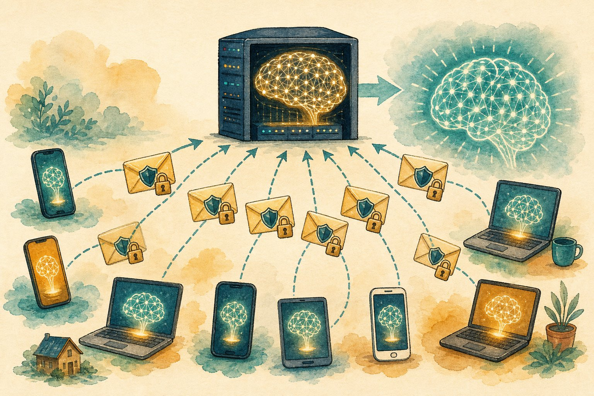

Federated learning & privacy
Train on everyone’s data without seeing anyone’s data. Learn FedAvg, differential privacy, and secure aggregation — the stack behind private keyboards, health models, and on-device personalisation.

Figure 54.1 — Data stays home; only model updates travel — locked, noised, and averaged.
1. FedAvg in one round
2. The privacy stack (each layer matters)
| Layer | Stops |
|---|---|
| Data minimisation | Raw data never leaves the device — the base guarantee |
| Secure aggregation | Server sees only the sum, never individual updates (crypto masking) |
| Differential privacy | Clip + noise updates so no single user is detectable (ε budget) |
| On-device personalisation | Global model + local fine-tune — your keyboard, your words |
DP intuition: the output barely changes if any one person opts out. Smaller ε = stronger privacy = more noise = worse utility. Privacy is a budget you spend deliberately.
3. Why it’s hard: non-IID + systems
- Non-IID data: your typing ≠ mine; hospital A’s patients ≠ B’s. FedAvg converges slower and can drift — fixes: more local epochs care, proximal terms (FedProx), personalisation layers.
- Systems: dropouts (phones go offline), stragglers, tiny upload bandwidth — sample subsets per round, compress updates, async variants.
- Attacks: malicious clients poisoning updates (Byzantine-robust aggregation), curious servers (need secure agg + DP, not just federation).
“Federated” ≠ automatically private
Gradients leak: reconstruction attacks can recover images/text from raw updates. Federation without DP + secure aggregation is distributed training with a privacy story — demand all three layers before health/finance claims.
Short notes
FedAvg: broadcast → local train → send Δw → weighted average. Privacy needs all three: local data + secure aggregation + DP (ε budget). Expect non-IID drift, dropouts, stragglers; defend with robust aggregation + personalisation. Gradients leak — never skip DP for sensitive domains.
Point notes
- Updates travel, data stays.
- Server sees sums, not users.
- ε = privacy budget.
- Non-IID slows + skews.
- Personalise the last mile.
MCQs
5 questions1. One FedAvg round is:
2. Secure aggregation guarantees the server sees:
3. Differential privacy’s ε (epsilon) is:
4. Non-IID client data causes:
5. Federation alone, without DP + secure aggregation:
Practice questions
P1. Three hospitals want a joint pneumonia model without sharing scans. Your design?
Cross-silo FL: same model, FedAvg over 3 clients with secure aggregation + DP (agreed ε). Handle non-IID (different scanners/populations) with site-specific batch-norm/personalisation + slice evals per hospital. Contracts: data never moves, audit update code, IRB approval, staged rollout with shadow evals.
P2. Keyboard next-word: 10M phones, mostly offline, tiny bandwidth. How do rounds work?
Cross-device FL: sample ~1k charging+WiFi phones/round; small model, few local epochs; compressed + quantised updates; DP noise; async-tolerant averaging. Personalisation layer per user on top of the global model. Metrics: top-1/3 on held-out users + on-device latency + battery.
P3. A vendor claims “federated = HIPAA-proof.” Your 3 due-diligence questions?
(1) Show me DP: what ε, where’s the noise, who holds the budget? (2) Show me secure aggregation: can your server see individual updates? (3) Show me reconstruction/poisoning evals + update-code audit. No crisp answers = distributed training with a privacy story, not a privacy system.